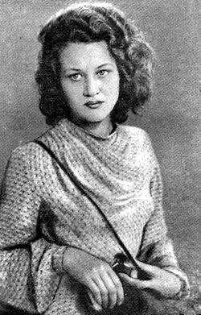

ЛІНА КОСТЕНКО
(Нар. 1930 p.)
Ліна Василівна Костенко народилася 19 березня 1930р. в містечку Ржищеві на Київщині в родині вчителів. У 1936p. родина перебралася до Києва, де майбутня поетеса закінчила середню школу. Ці скупі дані біографічної довідки стануть хвилюючими поетичними мотивами, коли авторка згодом розповість у віршах про біженські дороги воєнних років і про "балетну школу" замінюваного поля, по якому доводилося ходити, і про перший — написаний в окопі — вірш. Після закінчення середньої школи молода поетеса навчається в Київському педінституті, а згодом — у Московському літературному інституті ім. О. М. Горького, який закінчила 1956р. Ліна Костенко була однією з перших і найпримітніших у плеяді молодих українських поетів, що виступили на рубежі 50—60-х років. Збірки її віршів "Проміння землі" (1957) та "Вітрила" (1958) викликали інтерес читача й критики, а книга "Мандрівки серця", що вийшла в 1961р., не тільки закріпила успіх, а й засвідчила справжню творчу зрілість поетеси, поставила її ім'я серед визначних майстрів української поезії. Книги Л. Костенко "Над берегами вічної ріки" (1977), "Маруся Чурай" (1979), "Неповторність" (1980) стали небуденними явищами сучасної української поезії, явищами, які помітно впливають на весь її дальший розвиток. Творчий розвиток Ліни Костенко — поетеси гострої думки і палкого темпераменту — не був позбавлений ускладнюючих моментів. Обмеження свободи творчої думки, різні "опали" в часи застою призвели до того, що досить тривалий час вірші Л. Костенко практично не потрапляли до друку. Та саме в ті роки поетеса, незважаючи ні на що, посилено працювала, крім ліричних жанрів, над своїм найвидатнішим досьогодні твором — романом у віршах "Маруся Чурай", за який вона в 1987p. була удостоєна Державної премії УРСР імені Т. Г. Шевченка. Перу поетеси належать також збірка поезій "Сад нетанучих скульптур" (1987) та збірка віршів для дітей "Бузиновий цар" (1987). Живе та працює Ліна Костенко в Києві.